DESPRE NOI

 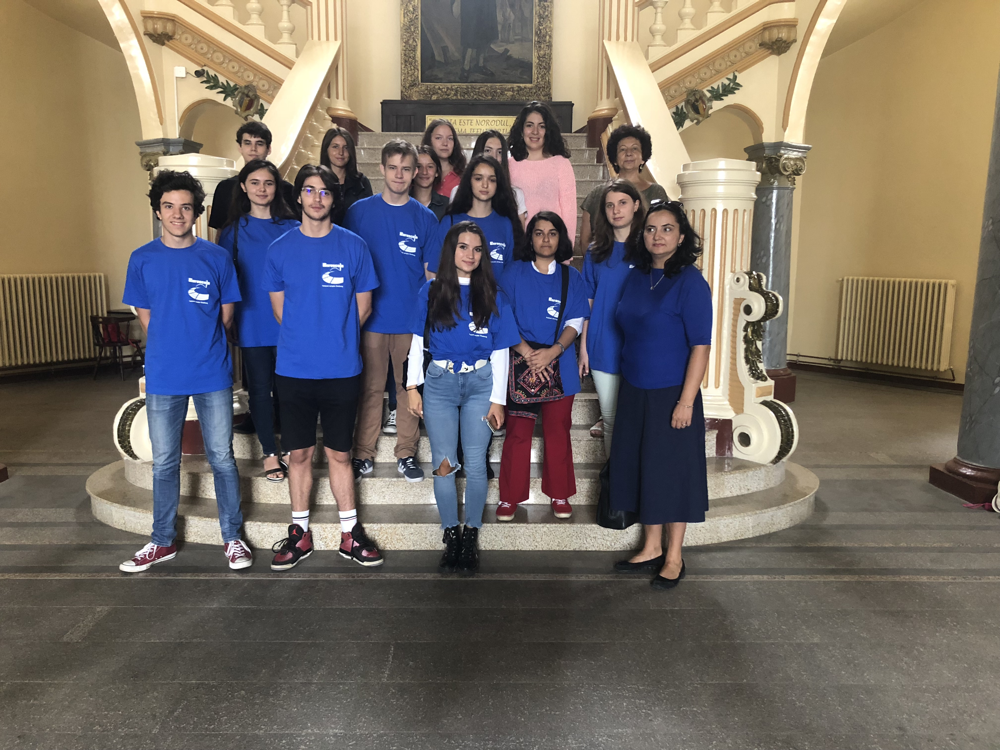
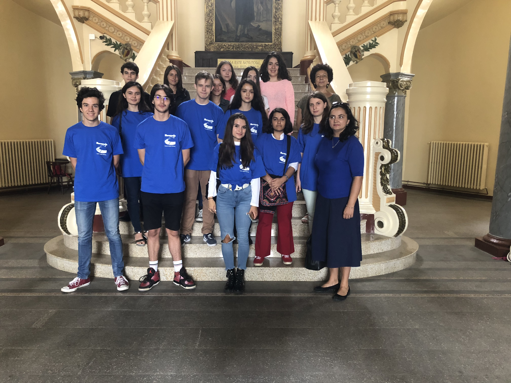
Colegiul Național "Tudor Vladimirescu" Târgu-Jiu anunță participarea la cea de-a XI-a ediție a Concursului pentru liceeni EUROSCOLA. Ediția 2018-2019 a concursului "Euroscola" se desfăşoară sub titlul generic "Europa pentru noi". Echipa de proiect va concepe şi implementa o campanie de informare şi conştientizare a beneficiilor aduse comunității locale de proiectul European: Reabilitarea, Modernizarea şi Echiparea Ambulatoriului Spitalului Județean de Urgență Târgu-Jiu.
COMPONENȚA
ECHIPEI
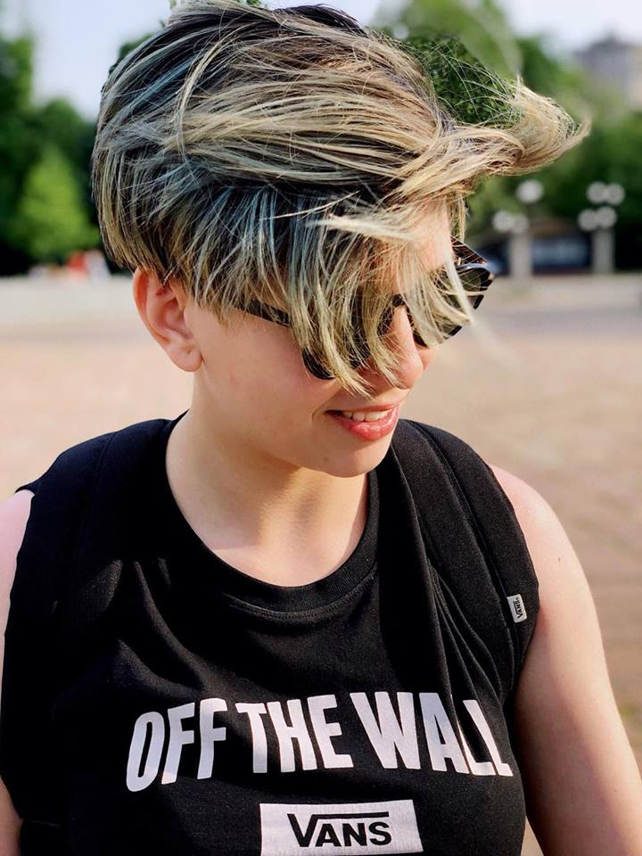Stănuşoiu Daiana - XI A Am reusit sa ma coordonez mai usor intr-o echipa. Am intalnit persoane interesate de domeniul dezvoltarii regionale. Am reusit sa informez persoane in domenii de interes local. Am invatat despre proiecte europene si cum as putea solicita fonduri. Am invatat sa gestionez un proiect cu fonduri europene. Am reusit sa inteleg mai usor diferentele intre oameni. |
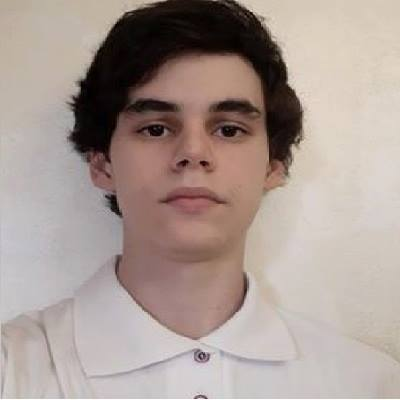Popescu Ioan - X C Proiectul Euroscola m-a ajutat sa acumulez un bagaj mare de cunostinte in diferite domenii. Am invatat cum sa ofer primul ajutor, cum sa fiu un lider mai bun si cum sa scriu un proiect. Lucrul de care sunt cel mai mandru, insa, e acela ca am reusit impreuna cu ceilalti sa informam populatia in legatura cu reabilitarea Ambulatoriului Spitalului Judetean de Urgenta Tirgu Jiu. |
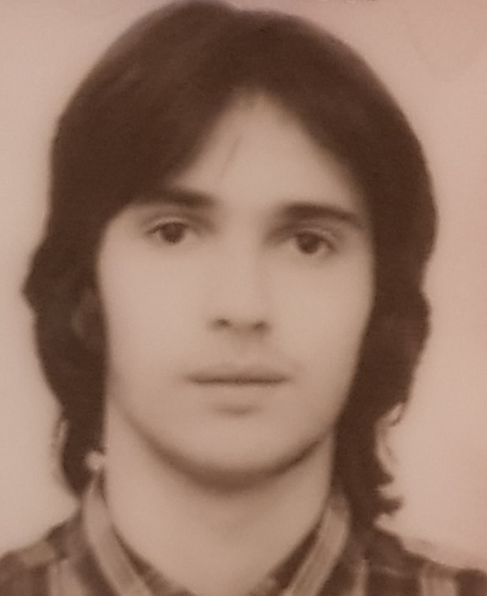Bîcoi Sebastian Darius - XI A Am facut ceva pentru mine si pentru scoala |
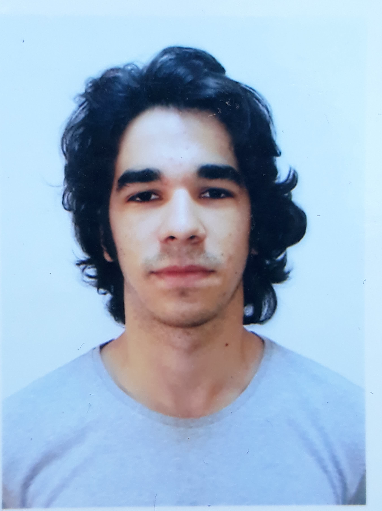Popeangă Mihnea Ștefan - XI A A fost o experiență nouă pentru mine și unică până acum întrucât nu am avut până acum ocazia să interacționez atât de mult cu oamenii necunoscuți. În urma acestei experiențe chiar am rămas cu impresia că nu toți oamenii sunt așa nepăsători pe cât am crede. Nu mă așteptam să ajung să mă oprească oamenii să mă intrebe mai mult despre proiect să ajung să vorbesc și câte zece minute cu anumite persoane. Mă bucur foarte mult că sunt parte din acest proiect și vreau să continuăm în aceeași măsură să informăm oamenii. |
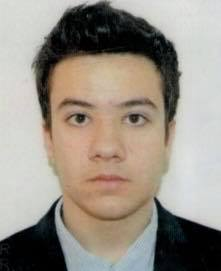Davițoiu Andrei Emil - XI A Mi-am dezvoltat spiritul de echipa si abilitatile de fotograf |
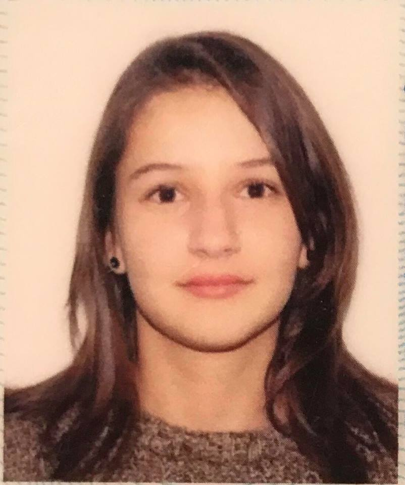Măgureanu-Stoenescu Andreea - X A Participarea la proiectul Euroscola a fost pentru mine o experiența de neuitat care m-a schimbat.Am început sa prețuiesc timpul, sa fiu mai organizata și punctuală. Am descoperit ca o echipa este o familie unita și am reușit sa castig niște prieteni adevărați. In cadrul acestui proiect mi-am exersat și calitatile de voluntar, dar și de lider și sper ca am câștigat aprecierea colegilor și a profesorilor. |
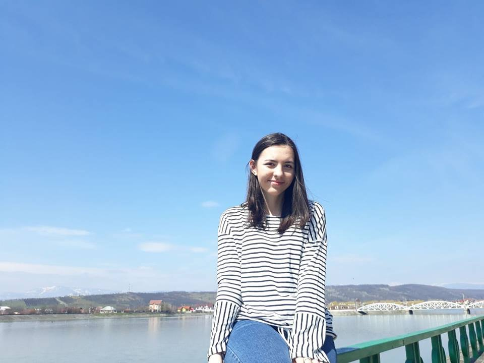Vlăduțescu Irina Gabriela - X E A face parte din echipa Euroscola a însemnat cu siguranță cea mai frumoasă experiență a verii. Am avut oportunitatea de a întâlni oameni noi de la care am invatat lucruri interesante. Am avut satisfacția de a mă implica într-un proiect pentru care a trebuit să mă documentez, devenind astfel mai organizată. În timpul activităților mi-am exersat abilitățile de organizator și mi-am antrenat gândirea creativă. Împreună cu colegii mei de echipă, am reușit să înțeleg eforturile pe care le implică salvarea unei vieți, trăind chiar noi emoțiile pe care le aduce cu sine acordarea primului ajutor. Contactul cu autoritățile locale și cu mass-media m-au făcut să iau în considerare și alte posibilități de carieră. |
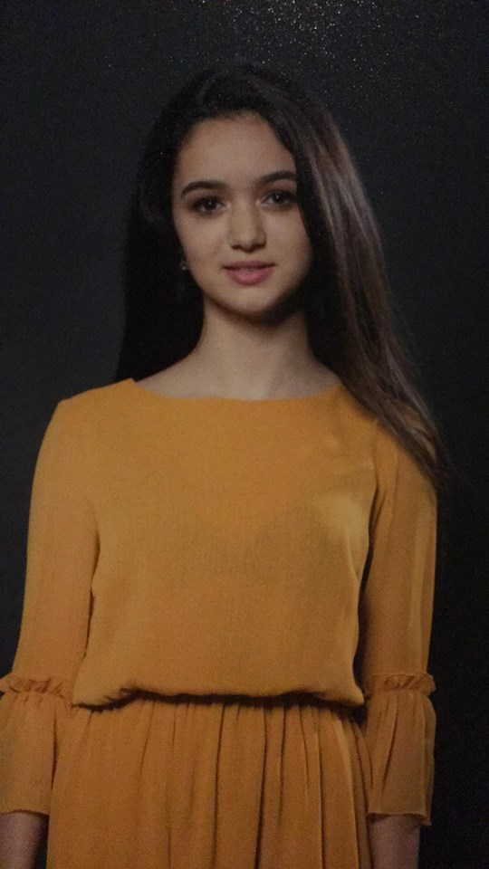Chiliban Bianca Andreea - X C Proiectul Euroscola reprezinta o experienta inedita,in care am premiat comunicarea, solidaritatea, spiritul civic, o provocare din caream iesit autodidact si in care mi-am depasit anumite limite si temeri. Am invatat ca mai presus de orice este sanatatea noastra, dar si armonia in care convietuim. Bucuria organizari activitatilor proiectului a constiutit o reala satisfactie personala. |
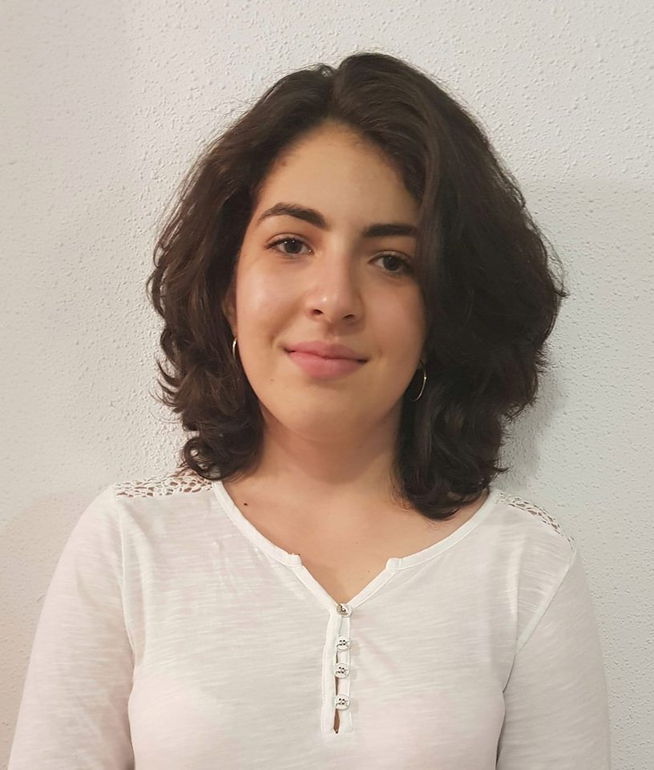Dabelea Ioana Viviana - X A Participând la proiectul Euroscola am avut parte de momente frumoase, făcându-mi prieteni noi și dezvoltându-mi abilitățile de comunicare. Așa am reușit să devin mai responsabilă, lucrând mult mai bine în echipă. |
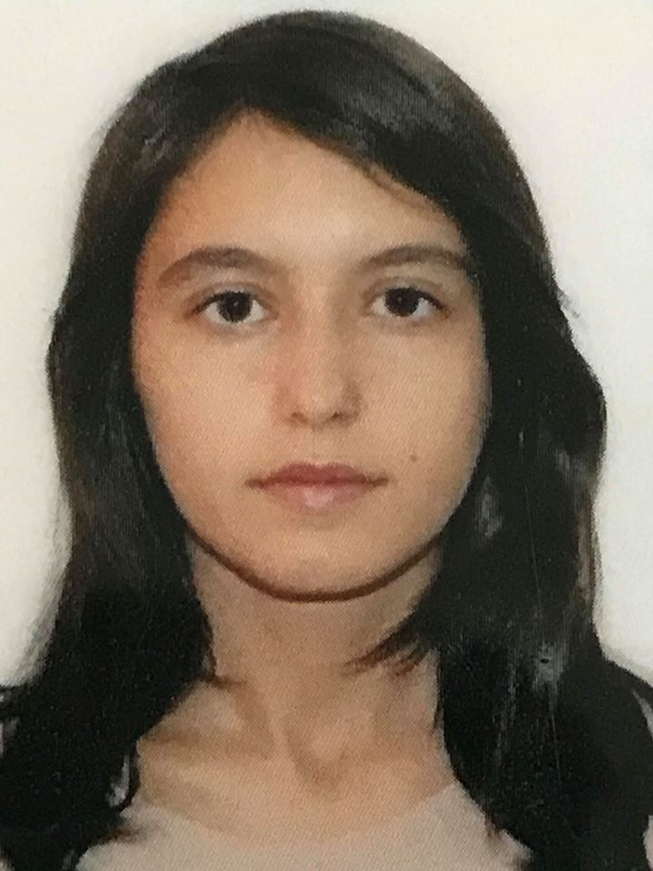Petrică Cristina Nicoleta - XI A Se spune că sănătatea e mai presus de orice, dar pentru a fi sănătos, trebuie să fii și informat. Consider că proiectul realizat de echipa CNTV deschide noi orizonturi pentru persoanele care au nevoie de îngrijiri medicale. Astfel, oamenii pot merge la ambulatoriu pentru probleme care nu sunt foarte grave, în loc să aglomereze camera de urgență a spitalului. Activitățile noastre au fost diverse, de la un cort amplasat în centrul orașului cu aparatură și personal pentru măsurarea tensiunii arteriale și a glicemiei doritorilor până la o vânătoare de comori adresată tinerilor. Cel mai mult m-a impresionat mulțimea de oameni care s-a adunat la cort și dorința acestora de a afla mai multe despre serviciile medicale oferite de ambulatoriu. Mi-a plăcut să îi văd plecând satisfăcuți de acolo, pentru că le-au fost răspunse întrebările și clarificate nedumeririle. Chiar cred că am realizat o activitate care a meritat osteneala, deoarece am reușit să le arătăm oamenilor o cale nouă de urmat pentru a face alegerea cea mai bună cu privire la sănătatea lor. De asemenea, echipa de proiect a fost foarte unită. Am cunoscut oameni noi, cu care mi-a făcut plăcere să lucrez și am învățat că o echipă înseamnă mai mult decât niște colegi care îndeplinesc diverse sarcini. Munca unei echipe adevărate se observă la finalul proiectului,iar eu sunt de părere că noi ne-am atins scopul propus inițial. |
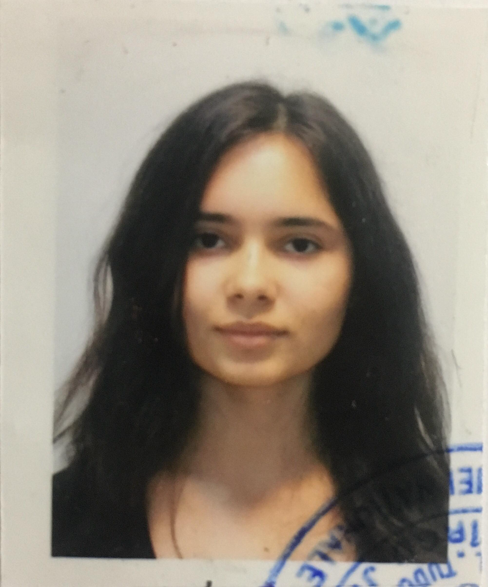Bălăcescu Anamaria - XI A Pentru mine acest proiect a reprezentat atat o oportunitate, cât și o provocare. Am avut sansa atat de a imi dezvolta spiritul de echipa, cât și de a imi valorifica cunoștințele de design, am reusit sa contribui activ in societate prin informarea publicului asupra schimbărilor aduse de reabilitarea ambulatoriului județean, cât și sa ajut alte persoane prin îndrumarea lor către acesta. Pe departe, însă, cea mai interesanta etapa mi s-a părut acumularea cunoștințelor necesare pentru redactarea unui proiect cu fonduri europene. Consider ca prin acest proiect am reusit nu numai sa intorc către societate o parte din binele care mi-a fost oferit, cât și sa fructific aceasta experienta in dezvoltarea propriei tolerante, creativități, precum și a redefinirii noțiunii de timp, pe care am început sa îl prețuiesc mai mult. Un proiect reusit care imi va rămâne pentru totdeauna in suflet! |
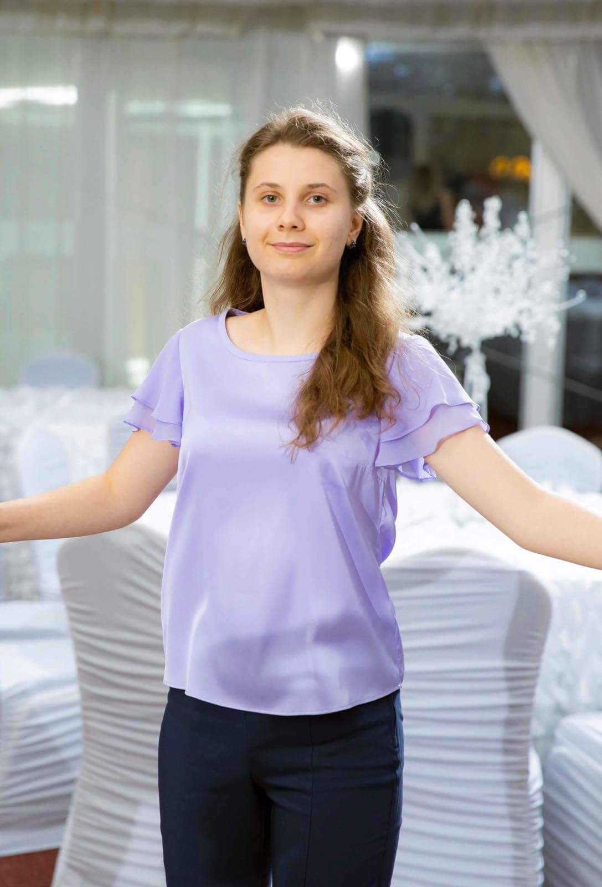Tudorescu Roxana - XI A “Călătorind” prin lumea Euroscola,mi-am dat seama cât de minunat e sa faci parte dintr-un astfel de proiect și cât de norocoasa am putut fi,având aceasta șansă.Pentru mine,Euroscola reprezintă o experiența inedită,o ocazie unica de lucra in echipa,de a ne afirma,de a ne dezvolta spiritul competitiv și de a descoperi altruismul.Participand la acest proiect,am întâlnit oameni care mi-au umplut sufletul cu bucurie și cu care am legat,sper eu,prietenii de lunga durata.Am invatat ca sănătatea este o responsabilitate ce revine nu numai profesionistilor,ci și fiecăruia dintre noi,ca este o lupta in care noi jucam rolul principal. Trebuie sa spun ca acest proiect a contribuit la formarea mea ca om,ca informarea cetățenilor despre modernizarea anumitor instituții medicale constituie un punct de referință important pentru dezvoltarea orașului,influentand totodata și viața oamenilor.Ma bucur ca am făcut parte din aceasta echipa minunata,deoarece am reușit sa construim o mulțime de amintiri frumoase.Daca cineva m-ar întreba dacă as mai repeta aceasta experiența,de fiecare data răspunsul meu ar fi “Da!”. |
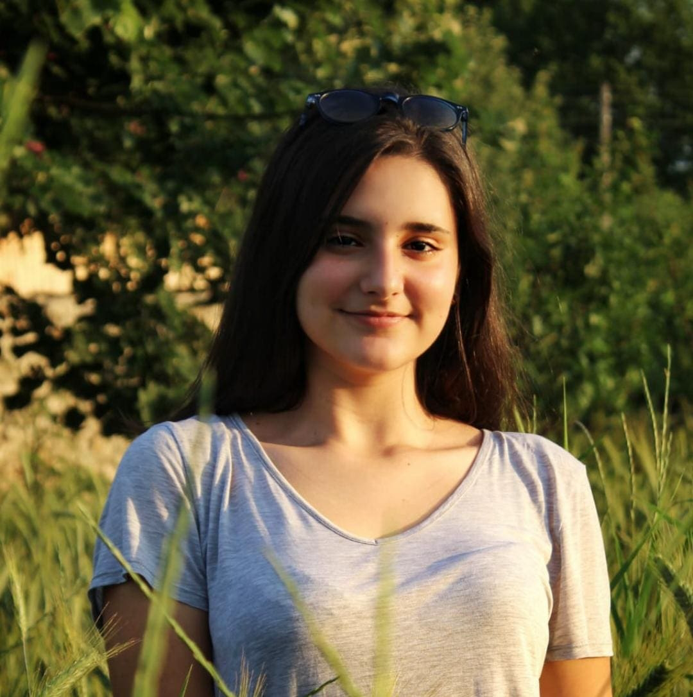Tuvene Alexia Teodora - X A Euroscola a fost cu mai mult decât o simplă experiență, considerand acest proiect o lecție de viață sau mai bine spus, oportunitatea de a invata sa privesc dintr-o altă perspectivă. Sunt fericita sa spun ca dupa aceste activități mi-am dezvoltat spiritul de lider si am invatat cum o echipă trebuie armonizata pentru a primi rezultatul dorit. Am început să acord atentie detaliilor si sa fiu mai atenta la lumea înconjurătoare. Înainte eram.preocupata doar de problemele mele, poate de cele mai multe ori banale, dar acum pot spune cu mândrie că sunt interesată mai mult de oamenii din jurul meu. Timpul a devenit mai prețios pentru mine si am.invatat cum pot sa il valorific. De aceea acum prefer să fiu mai organizată. Activitățile pe care le-am.desfasurat in timpul.verii au reușit să-mi coloreze vara. Am.vazut cat de usor este sa combini utilul cu plăcutul si cum prin distractie poti invata lucruri noi. Momentele in care am vorbit cu locuitorii orașului nostru mi-au deschis noi orizonturi si m-au facut mai înțeleaptă.Am fost placut surprinsă de reactia oamenilor, multi fiind mulțumiti de campania noastră de informare si am inteles cu adevarat ce inseamna dreptul de a fi informat. |
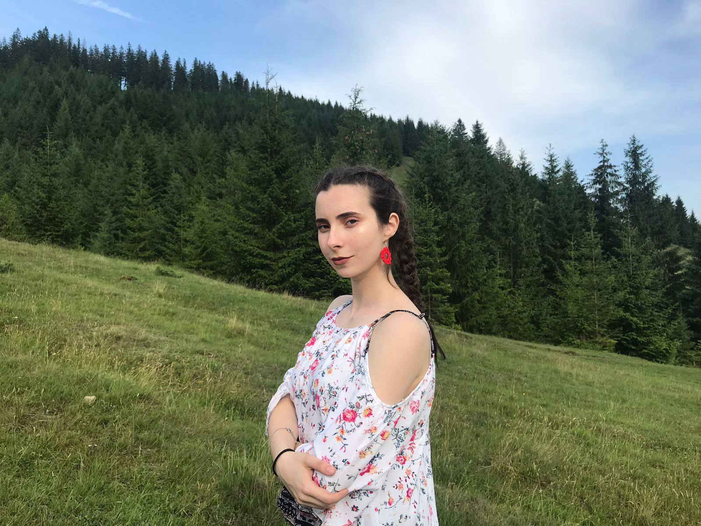Bunget Andreea Maria - X A Experiența EUROSCOLA a fost una de neuitat, prin care m-am maturizat şi am învățat cât de importantă este munca în echipă. Prin acest proiect european am făcut ceva pentru mine şi pentru şcoală, combinând utilul cu plăcutul, ducând la bun sfârșit o idee şi câștigând în același timp aprecierea colegilor şi a profesorilor. Am participat la activități de voluntariat şi mi-am exersat abilitățile de fotograf. De asemenea, am devenit mult mai responsabilă şi mai creativă şi am avut ocazia de a cunoaşte oameni noi, care mi-au devenit prieteni. |
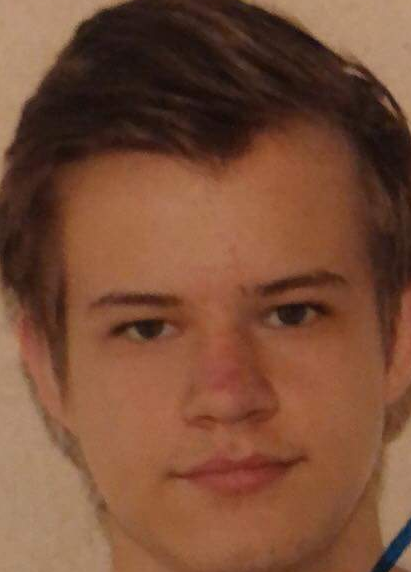Prunescu Bogdan Andrei - X C Activitățile pe care le-am.desfasurat in timpul.verii au reușit să-mi coloreze vara. Am.vazut cat de usor este sa combini utilul cu plăcutul si cum prin distractie poti invata lucruri noi. Momentele in care am vorbit cu locuitorii orașului nostru mi-au deschis noi orizonturi si m-au facut mai înțeleaptă.Am fost placut surprinsă de reactia oamenilor, multi fiind mulțumiti de campania noastră de informare si am inteles cu adevarat ce inseamna dreptul de a fi informat. |
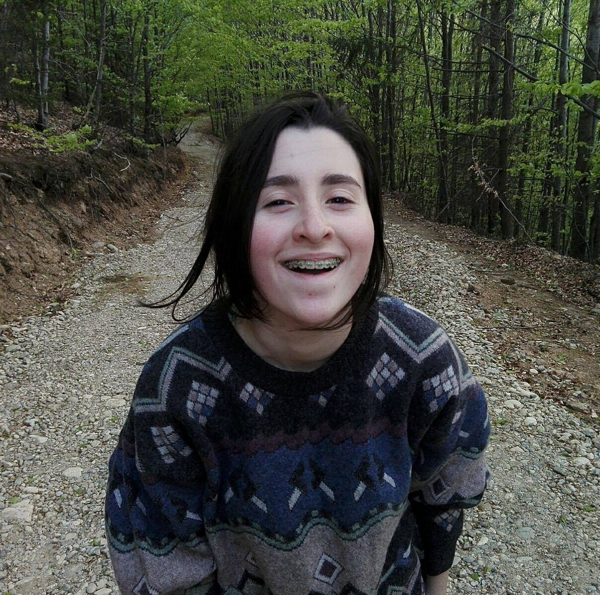Groza Iulia Diana - X C Euroscola ne-a adus o multitudine de beneficii atât individual, prin implicarea activă a fiecărui membru al echipei CNTV în demararea proiectului, cât și la nivelul comunității noastre locale, prin informarea cetățenilor cu privire la modernizarea Ambulatoriului Județean. Personal, am avut ocazia să interacționez cu diverse grupuri sociale întâlnite la evenimentele organizate, să îmi dezvolt capabilitățile de lucru în echipă și de gestionare a problemelor într-un proiect, să-mi adaug la portofoliu un proiect inedit, dar și să aflu informații noi, să îmi îmbunătățesc cunoștințele tehnice extrem de utile în parcursul meu profesional. Gradul de implicare al tuturor celor care au avut contact cu acest proiect este îmbucurător și demonstrează încă o dată ca Euroscola unește oameni. |
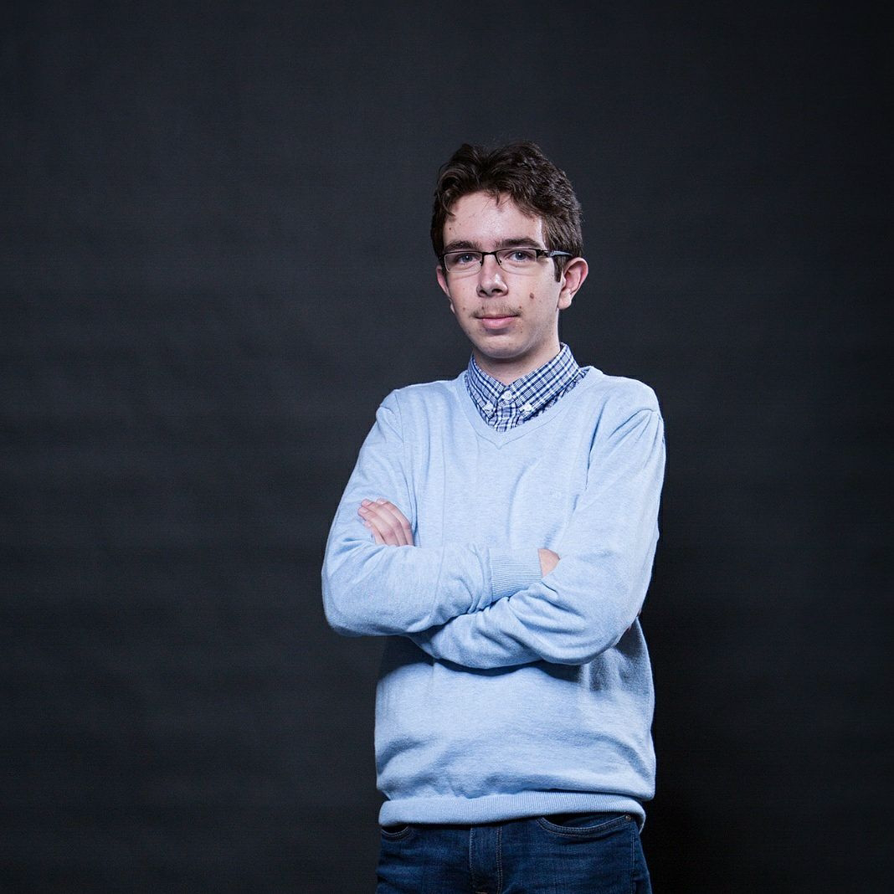Predescu Radu - X C Concursul Euroscola a fost o experienta inedita, care mi-a oferit ocazia de a petrece timp impreuna cu cei mai buni prieteni ai mei, dar si de a cunoaste persoane noi, cu care m-am imprietenit foarte repede. Pe langa acestea, mi-am putut antrena spiritul de lucru in echipa si colegialitate. Concursul Euroscola 2018 a fost o experienta pe care cu siguranta nu o voi uita niciodata! |
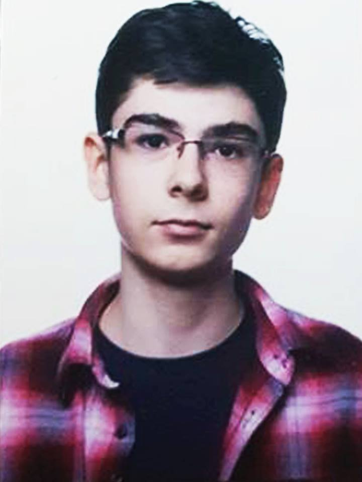Dinuță Eduard Ștefan - X C Participarea la euroscola a fost o experienta deosebita prin intermediul careia am imbinat utilul cu placutul, facand ceva benefic pentru mine,scoala si comunitate |
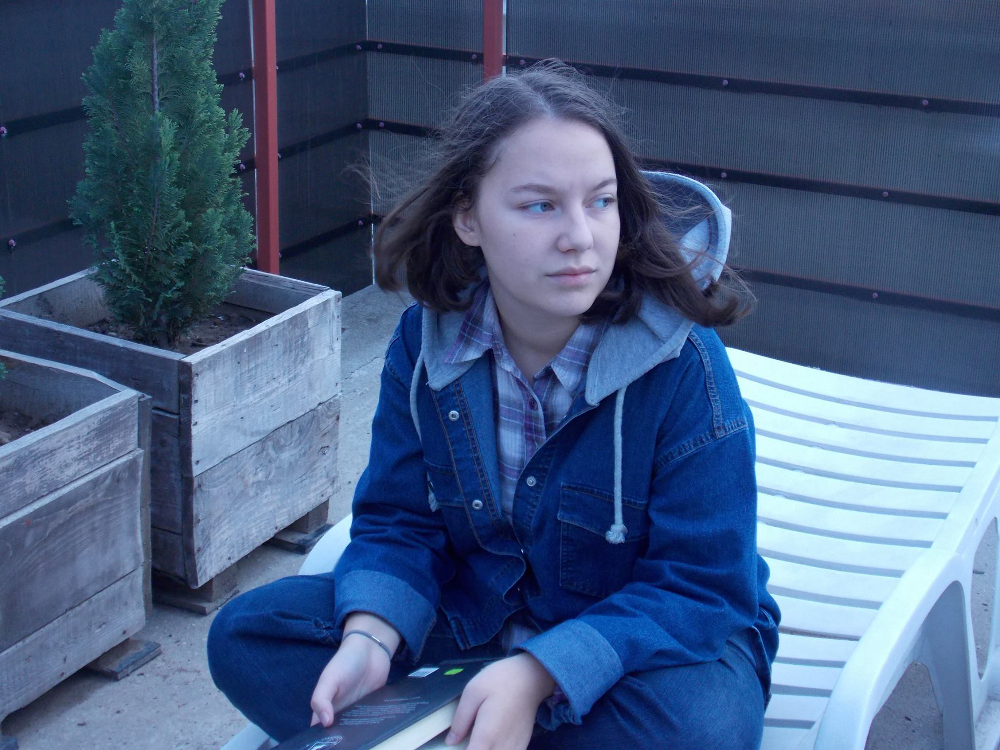Dobrotă Maria Angela - X C Consider ca activitatile din cadrul proiectului "EUROSCOLA" vin ca un izvor plin de cunoastere. Tot ceea ce am facut a insemnat o abatere de la comfort, de la rutina atat pentru noi , cat si pentru oamenii care au avut ocazia sa aibe tangente cu noi. Ma bucur enorm de fiecare clipa pe care am petrecut-o langa echipa si langa oamenii care ne-au ajutat, chiar si ascultandu-ne ideile. Pe parcursul proiectului am cunoscut oameni noi, am avut ocazia sa trecem peste zona noastra de lejeritare si sa vorbim cu necunoscuti pentru a-i informa, ne-am informat pe noi insine vazand renovarea Ambulatoriului si documentandu-ne despre aceasta , am organizat un Treasure Hunt, am invatat cum sa scriem un proiect european si cel mai important am castigat o experienta de neuitat. Asa cum spunea si Albert Einstein "Informatia nu este cunoastere. Singura sursa a cunoasterii este experienta." |
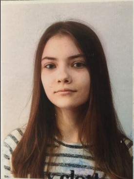Pîrvulescu Roberta-Alina - XI E #EuroscolaRO2018 nu este doar o competiţie, este un prilej de a descoperi şi de a te descoperi. Faptul acesta l-am aflat făcând parte din echipa Colegiului Naţional “Tudor Vladimirescu”. Trebuie să recunosc, la început am fost puţin temătoare. Nu ştiam ce provocări îmi va aduce această experienţă, nu ştiam dacă voi fi capabilă să le fac faţă aşa cum se cuvine, însă am fost plăcut surprinsă de solidaritatea de care am dat dovadă cu toţii, formând cu adevărat o echipă, o structură unitară, compactă. Prin prisma acestui proiect am învăţat multe. Am descoperit ce înseamnă umanitatea şi profesionalismul ambulatoriului târgujian. Excelenţa şi precizia, nu doar în diagnosticare, ci şi în relaţia cu pacientul, sunt la ele acasă. Personalul medical a fost atât de deschis încât ne-a introdus în tainele medicinei şi ne-a acompaniat într-o activitate de proporţii regionale în Piaţa Prefecturii a oraşului. |
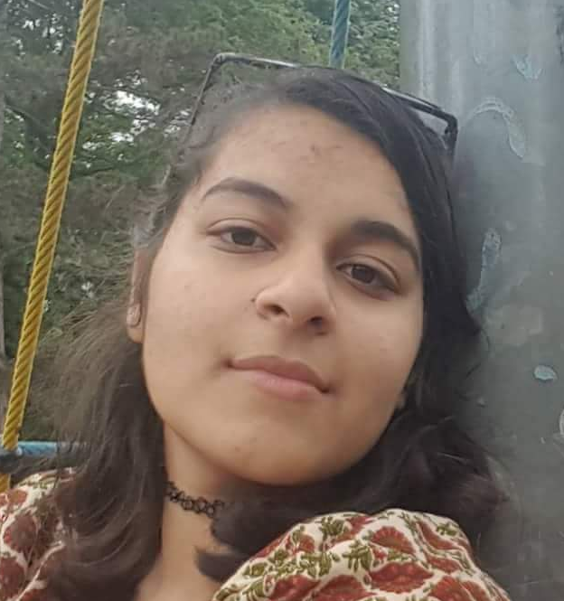Aggarwal Ananda Maria - XI E Pot spune că Euroscola a reprezentat o modalitate de dezvoltare personală. Am învăţat multe atât despre medicină, cât şi despre arta comunicării. Am aflat despre nemulţumiri, dorinţe, aşteptări şi păreri bune, am primit sfaturi de viaţă şi am împărtăşit idei şi ţeluri cu echipa şi publicul larg, de asemenea. |
 Popescu Bianca - X C Popescu Bianca - X C Prin participarea la Euroscola mi am deschis noi orizonturi de cunoaștere. Am avut ocazia sa cunosc oameni noi, sa leg noi prietenii și mai ales, am dobândit abilități de lider. |
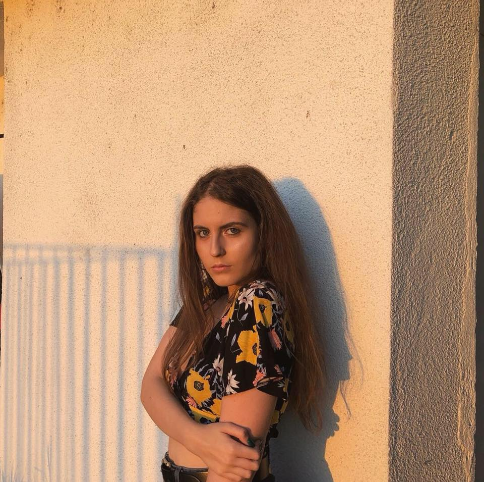Ionescu Cristina Elena - XI G Prin intermediul proiectului EUROSCOLA am invățat să îmi impun unele opinii și să îmi testez creativitatea. |
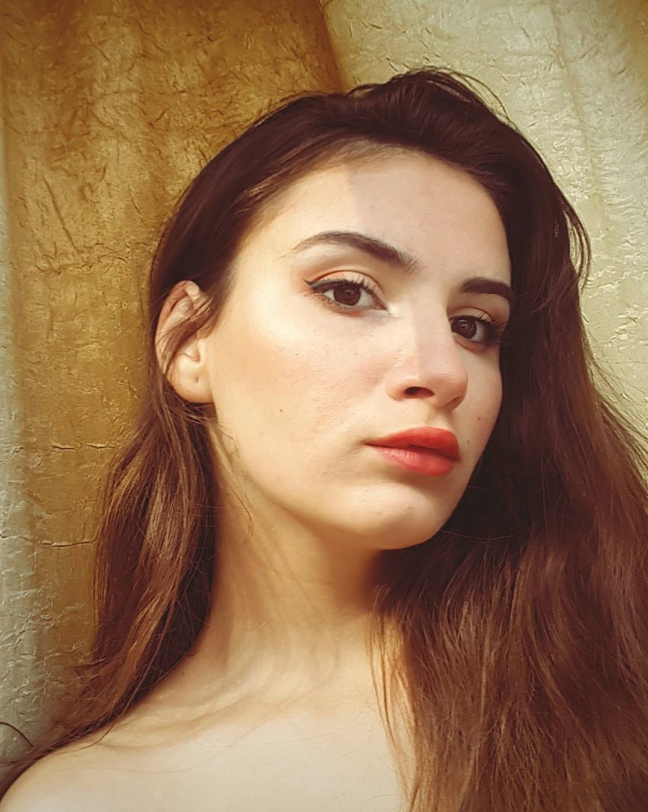Mihai Mirela Elisabeta - XI E Datorită proiectului, am avut ocazia de a lua contact cu opinia publică. Am fost plăcut surprinsă de buna părere împărtăşită de majoritatea persoanelor care au binevoit să ne acorde câteva moment pentru a le detalia subiectul pe care îl promovăm. Un alt lucru neaşteptat a fost interesul de care publicul a dat dovadă indiferent de vârstă, sex sau mediul din care provin. |
Profesori coordonatori:
- Velțan Elena
- Dragotă Teodora
Parteneri:
- 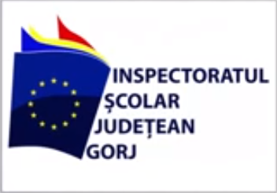

- 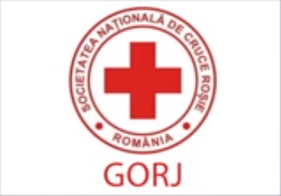
LINK: Descrierea proiectului de Reabilitare, Modernizare și Echipare a Ambulatoriului Spitalului Judeațean de Urgență Târgu-Jiu - Română
LINK: Descrierea proiectului de Reabilitare, Modernizare și Echipare a Ambulatoriului Spitalului Judeațean de Urgență Târgu-Jiu - Engleză
Obiectivele proiectului:
- implicarea tinerilor liceeni în promovarea politicilor europene de dezvoltare durabilă din Agenda Europa 2020.
- o mai bună diseminare a proiectelor derulate de administrația locală.
- o mai bună colaborare între autoritățile locale și tineri.
- încurajarea tinerilor de a se implica în elaborarea și implementarea proiectelor europene.
- conștientizarea beneficiilor pe care proiectul promovat îl aduce locuitorilor județului Gorj.
- implicarea în activități de educație pentru sănătate și prevenție.
- crearea de parteneriate cu diverse instituții pentru o mai bună sustenabilitate a proiectului în vederea realizării de viitoare proiecte.
- informarea cetățenilor cu privire la șansele egale de acces la servicii medicale de calitate, rezultat al modernizării Ambulatoriului Spitalului Județean Gorj.
- creșterea interesului elevilor și profesorilor din instituția noastră privind educația pentru sănătate prin realizarea mai multor activități școlare și extrașcolare de acest gen și cu o mai mare aplicabilitate.
- o mai bună cunoaștere a valorilor europene și exersarea lor în contexte nonformale.
- dezvoltarea competențelor cheie pentru secolului XXI: competențele digitale, lingvistice, creativitatea, lucrul în echipă, spiritul antreprenorial, comunicarea.
- consolidarea rolului important pe care școala îl are în comunitate și în formarea de cetățeni europeni.
Stadiile proiectului:
- Anunțarea selecției echipei de proiect. Respectând principiul transparenței și competitivității selecția echipei de proiect s-a realizat prin anunțarea criteriilor de înscriere la avizierelor școlii,Acestea au cuprins rezultatele la învățătură (peste 9.50), competențe lingvistive dovedite în timpului interviului cu tematică europeană
- Constituirea echipei de proiect
- Documentare privind alegerea proiectului
- Discuții cu reprezentanții Consiliului Județean Gorj
- Activitate de elaborare plan de activitați
- Stabilirea scopului și obiectivelor proiectului
- Anunțarea intenției de participare în concurs
- Stabilirea calendarului activitaților
- Inființarea website/facebook proiect
- Vizită de documentare la Ambulatoriul Spitalului județean Gorj
- Activitate de voluntariat
- Realizare sondaj de opinie / afiș
- Pregatire și derulare campanie de informare în centrul orașului - 21 august 2018
- Activitate Treasure Hunt 21 august 2018
- Activitate cu elevii claselor primare: Desene pe asfalt: Europa pentru Sănătate!
- Activitate: Să învățăm să scriem un proiect european! - 18 septembrie 2018
- Expoziție de fotografii în holul C.N. T. Vladimirescu
- Lansarea broșurii/ghidului realizat în timpul proiectului
- Diseminare în cadrul Consiliului profesoral/Consiliul Elevilor,către studenții Facultății de Științe Economice(Universitatea C.Brâncuși), pe website – ul/facebook-ul, şcolii/al proiectului
- Campanie in presa locală (ziare/radio/T.V.)
- Activitate: Marș pentru sănătate, Marș pentru Europa!
- Finalizarea și expedierea materialelor EUROSCOLA